پرفروشترین
تهچین زعفرانی
برنج طارم، ماست پرچرب و زعفران قائنات؛ چهار ساعت دم روی آتش ملایم با زرشک و پسته.
۶۸۰ هزار تومان۲۰ دقیقه
سفره، آشپزخانه داوود صدر است؛ جایی که دستور پختهای قدیمی تبریز با تکنیکهای امروز آشپزی روی آتش ذغال و در دیگ مسی جان میگیرند.
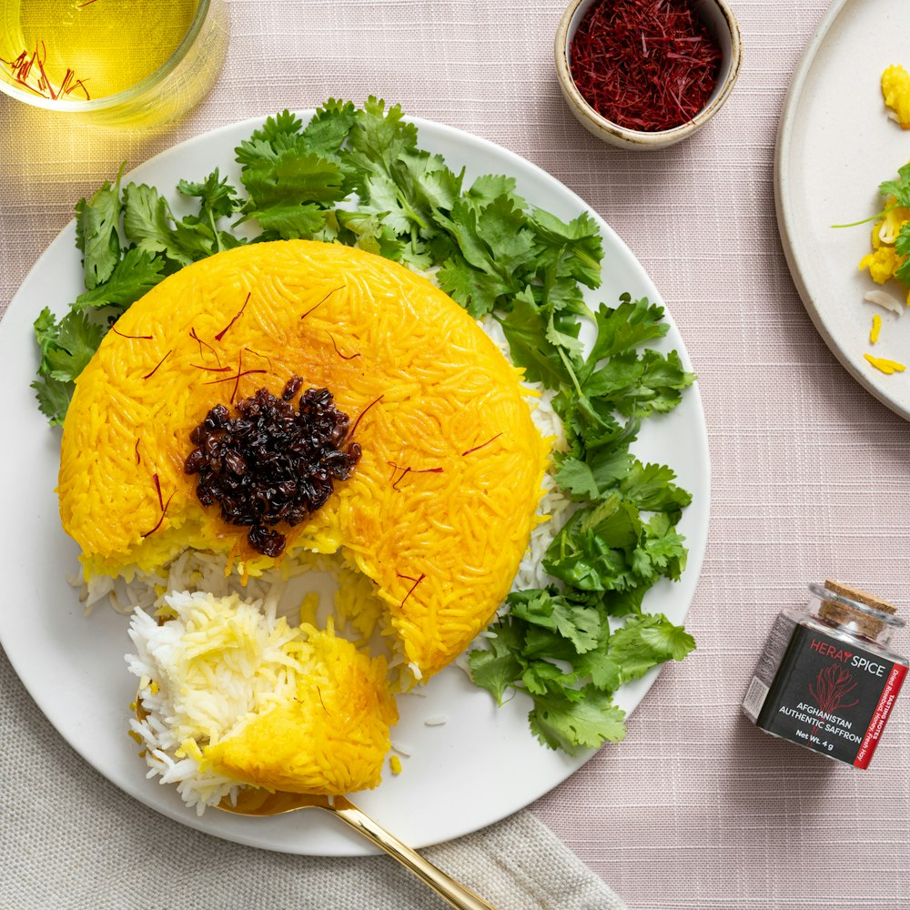

اولین درس آشپزی را در آشپزخانه مادربزرگم در تبریز گرفتم؛ جایی که بوی زعفران و دارچین همیشه در هوا بود. بعدها آشپزی فرانسوی خواندم و در آشپزخانههای پاریس و استانبول کار کردم.
در سال ۱۳۹۲ سفره را باز کردم تا همان طعمهای خانگی را با دقت یک آشپزخانه حرفهای سرو کنم. منوی ما هر فصل عوض میشود، اما تهچین و فسنجان مادربزرگ همیشه سر جایشان هستند.
مهمانان ما بیشتر از هر چیز سراغ این سه غذا را میگیرند.
برنج طارم، ماست پرچرب و زعفران قائنات؛ چهار ساعت دم روی آتش ملایم با زرشک و پسته.
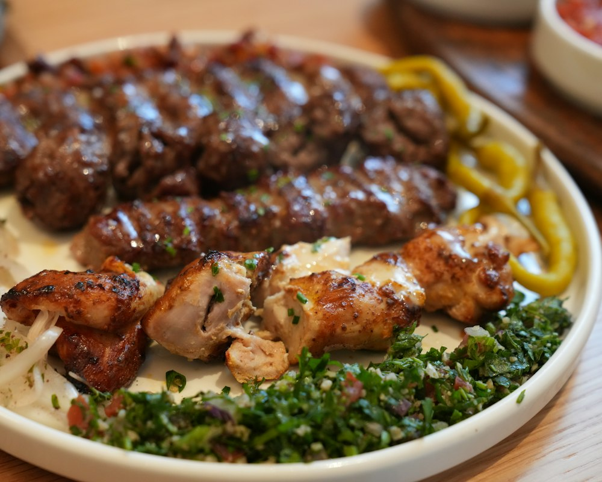
روی ذغالفیله گوساله و ران مرغ مزهدار در زعفران و پیاز، روی ذغال چوب پرتقال کباب میشوند.
 مخصوص جشنها
مخصوص جشنهاپلوی جواهرنشان قزوین با خلال پسته و بادام، پوست پرتقال، زرشک و هویج زعفرانی.
قیمتها به هزار تومان است و مالیات بر ارزش افزوده را شامل میشود.
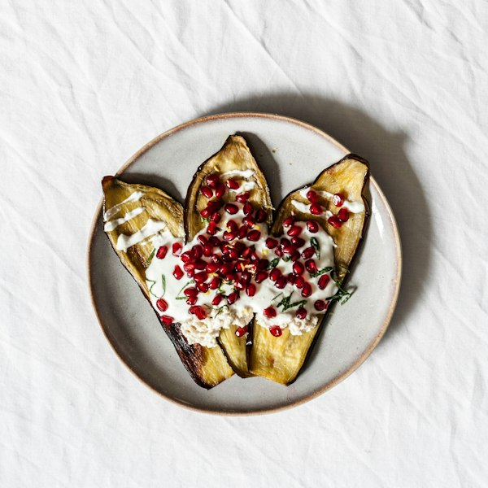
بادمجان دودی روی ذغال، ماست چکیده، دانه انار و روغن نعنا
گیاهی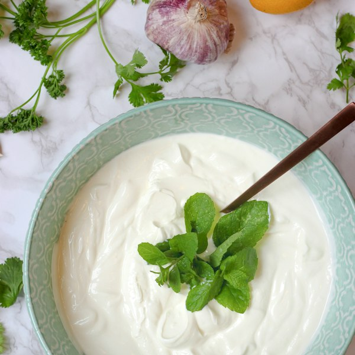
ماست محلی، خیار، گلمحمدی، کشمش و نعنای تازه
گیاهی
اسفناج تازه، سیب ترش، گردوی کاراملی و پنیر لیقوان
پیشنهاد سرآشپز
آش دوغ آذربایجانی با سبزی معطر، نخود و دانه انار
دستور تبریز
عدس سبز، پیاز قرمز، جعفری، انار و سس آبغوره
گیاهی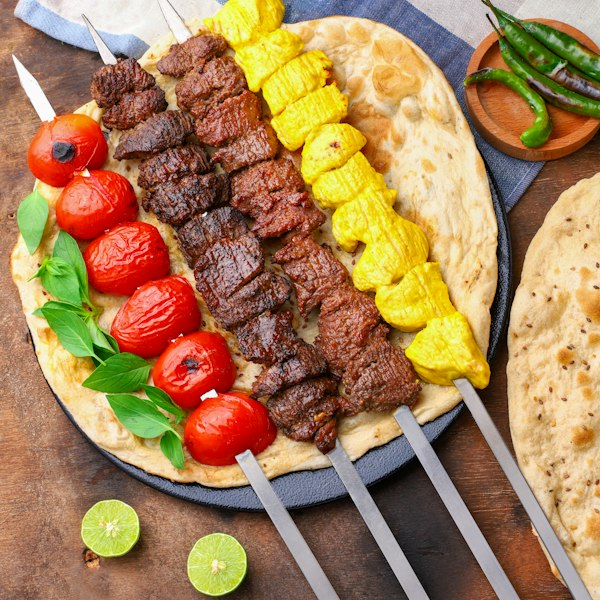
یک سیخ کوبیده، یک سیخ جوجه زعفرانی، گوجه کبابی و نان تافتون
روی ذغال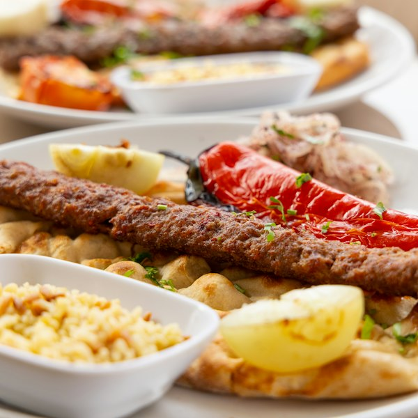
دو سیخ کوبیده گوسفندی، چلوی کرهای، فلفل و گوجه کبابی
کلاسیک
ران مرغ آرامپز در سس گوجه و زعفران، زرشک کرهای و پسته
پیشنهاد سرآشپز
تهچین ترد با فیله مرغ، ماست، زعفران و زرشک
پرفروش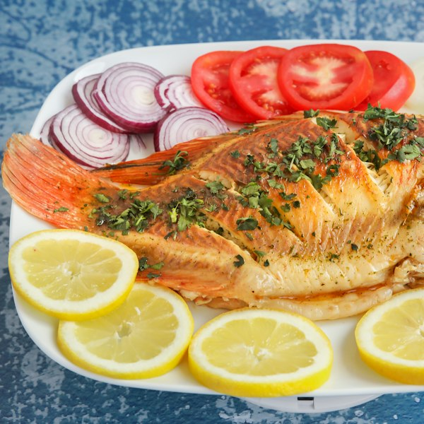
ماهی صید روز بندرعباس، سبزیپلو، لیمو و پیاز قرمز
صید روز
بستنی دستساز با زعفران، گلاب، تکههای خامه یخزده و پسته
دستساز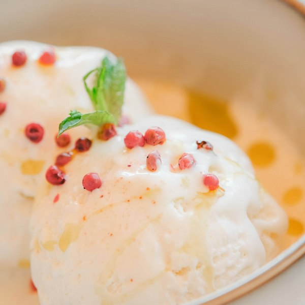
فرنی آرد برنج با شیر محلی، گلاب کاشان و گلبرگ گلمحمدی
گیاهی
کیک خیس زعفرانی با شربت هل، پسته و زرشک
پیشنهاد سرآشپز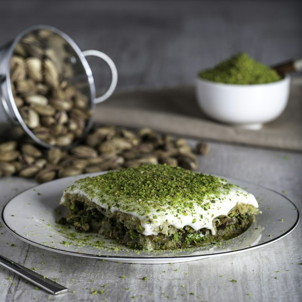
لایههای کیک اسفنجی، خامه پسته و پودر پسته رفسنجان
تازه
چای لاهیجان دمکشیده در سماور با نبات زعفرانی
نوشیدنیپنجشنبه و جمعه شب، فقط برای هشت مهمان. داوود صدر هر بشقاب را جلوی شما آماده میکند و داستانش را تعریف میکند.
با کشاورزان و تولیدکنندگان کوچک کار میکنیم تا هر طعم ریشه در جای خودش داشته باشد.
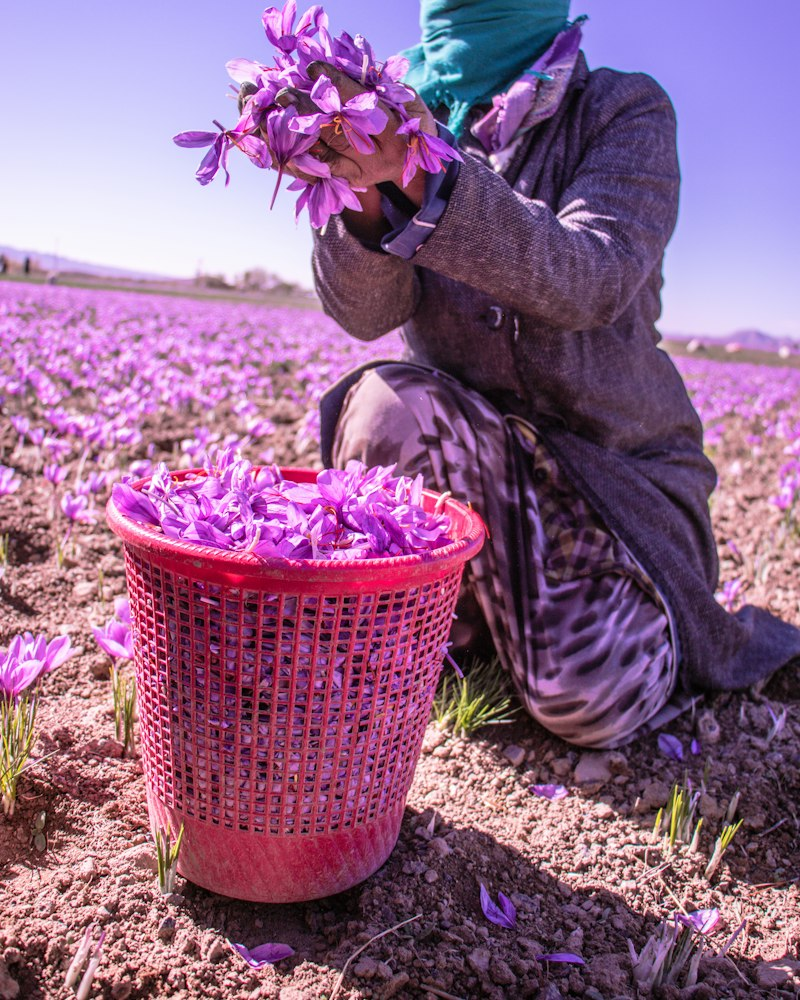
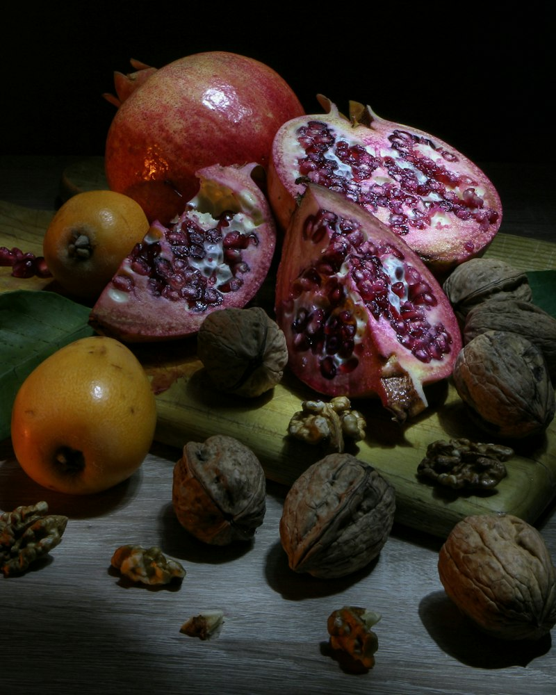
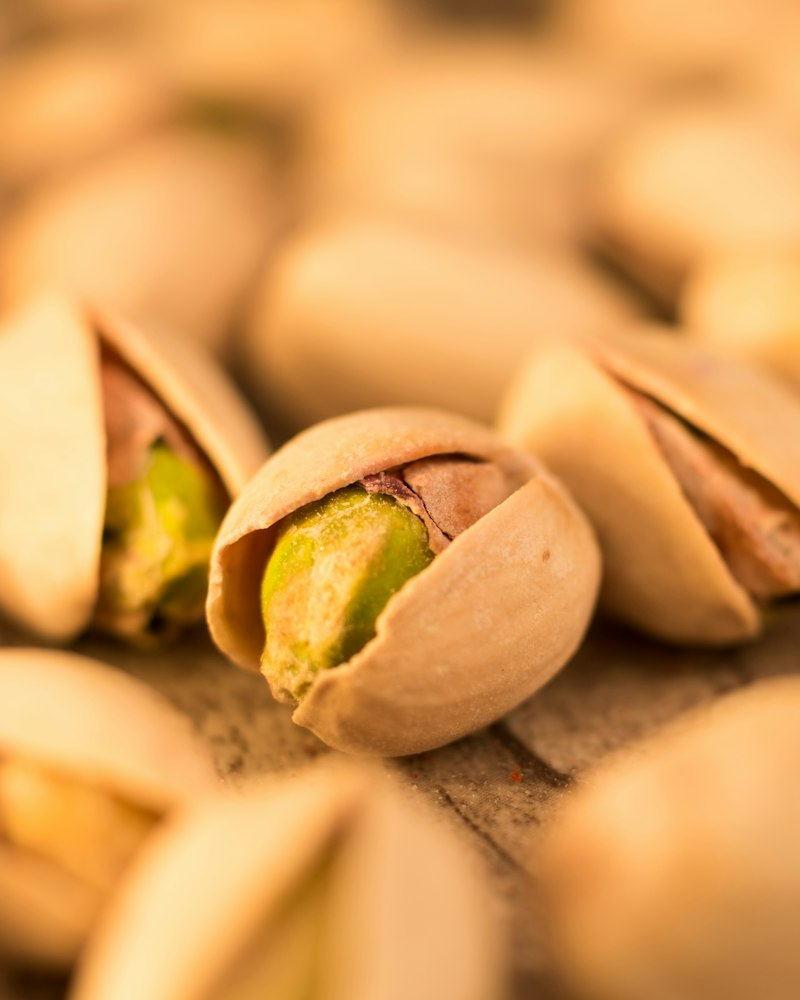
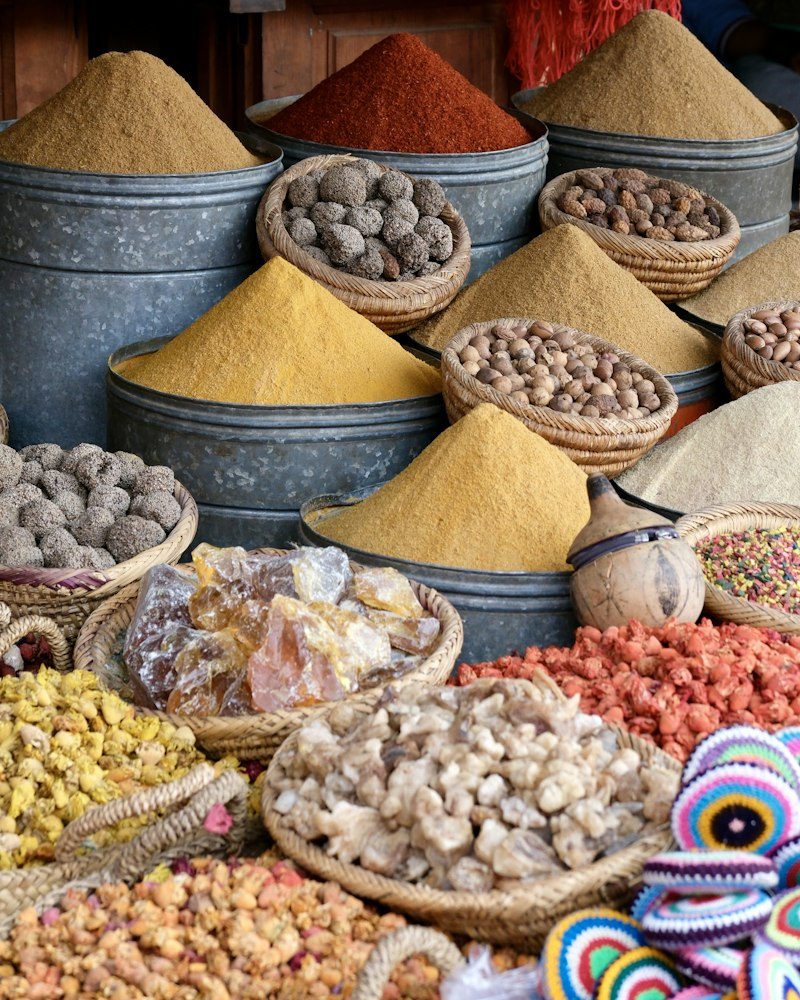

منوی اختصاصی و آشپزی در خانه شما برای مهمانیهای ۶ تا ۲۰ نفره.
درخواست
پذیرایی ایرانی برای جشنها، همایشها و رویدادهای شرکتی تا ۳۰۰ نفر.
درخواست
کارگاههای عملی یکروزه: پلو و تهدیگ، کبابها و خورشهای اصیل.
ثبتنام
طراحی منو، استانداردسازی دستور پخت و آموزش تیم آشپزخانه.
درخواست«یکی از ده رستوران برتر تهران؛ تهچینش را نباید از دست داد.»
مجله سفر و طعم
«آشپزی ایرانی با دقت یک آشپزخانه بینالمللی.»
روزنامه شهر
«نشان طلای جشنواره ملی آشپزی ایران در بخش غذای سنتی.»
جشنواره آشپزی ایران ۱۴۰۳
کباب برگ سفره بهترین کبابی است که در پانزده سال نقد غذا خوردهام؛ گوشت نرم و بوی ذغال، بدون هیچ ادعای اضافه.

شام خصوصی سالگرد ازدواجمان را در خانه برگزار کردیم. منو را با سلیقه ما چید و مهمانها هنوز از آن حرف میزنند.

برای آخر هفتهها حداقل سه روز زودتر رزرو کنید. میزها تا ۱۵ دقیقه بعد از ساعت رزرو نگه داشته میشوند.
رنگ و حالت نمایش را امتحان کنید.
رنگ اصلی حالت نمایش